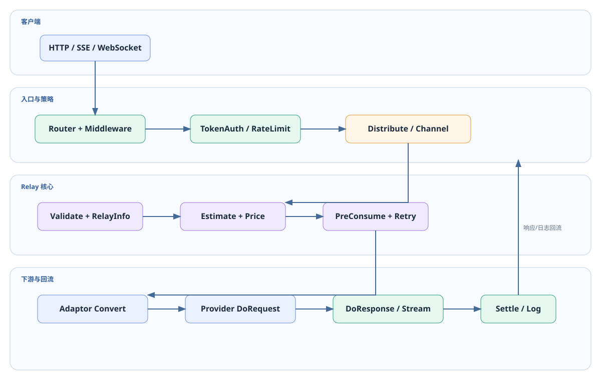

Chapter 07 · Streaming & Tasks
SSE、Realtime WebSocket 与异步任务
同步 JSON、SSE、WebSocket 和任务轮询共享鉴权/调度/计费骨架，但响应生命周期和结算时点不同。
流式响应：边生成边返回

- Relay 根据请求
stream标志选择流式路径，Adaptor 发起上游请求。 relay/helper/stream_scanner.go:StreamScannerHandler逐事件读取，写入客户端并刷新 deadline。- 扫描器记录首字节时间、结束原因、Usage、客户端断开和上游超时。
- 流结束后进入统一结算与日志；没有完整 Usage 时使用受保护的估算回退。
单次写入超时为 30 秒；空闲流超时由 STREAMING_TIMEOUT（默认 300 秒）控制。
Realtime WebSocket
/v1/realtime 复用 TokenAuth，从 Sec-WebSocket-Protocol: openai-insecure-api-key.<key> 提取 Token。relay/websocket.go 负责双向事件转发、关闭和错误映射；它不是 SSE，不能套用普通 JSON 响应解析。
- 认证和渠道选择发生在升级前。
- 连接级超时、上游关闭和客户端断开都必须结束 BillingSession。
- 上游事件中的 Usage/结束原因需传入公共日志和结算。
异步任务生命周期

ValidateRequestAndSetAction → EstimateBilling / 预扣 → BuildRequest* + DoRequest → DoResponse 得到 taskID → FetchTask + ParseTaskResult（轮询） → 成功/失败终态 → AdjustBillingOnComplete + 退款/补扣
图片、视频、音乐、Midjourney、Suno 等任务在提交响应时通常尚未完成。任务记录保存渠道、用户、预扣和上游 ID；轮询超时按任务策略结束并退款。
可调参数与边界
| 参数 | 默认/来源 | 影响 |
|---|---|---|
STREAMING_TIMEOUT | 环境变量，300 秒 | SSE/流式空闲超时。 |
RELAY_TIMEOUT | 环境变量，0 表示不设总超时 | HTTP 上游客户端超时。 |
STREAM_SCANNER_MAX_BUFFER_MB | 128 MB | 事件扫描缓冲上限。 |
TASK_TIMEOUT_MINUTES、TASK_QUERY_LIMIT | 环境变量 | 任务轮询终止和单轮查询数量。 |
FORCE_STREAM_OPTION | true | 是否强制请求带 stream_options/usage。 |
常量初始化见 common/init.go:initConstantEnv；具体任务适配器可在 Channel 设置中调整代理、路径和轮询参数。
学习者排障与资深自检
- 客户端收到空 SSE：检查
StreamScannerHandler的上游 Content-Type、缓冲和结束事件。 - 流式请求一直不结束：检查
STREAMING_TIMEOUT、上游 ping/断开和写 deadline。 - 任务已成功但额度未结算：检查
ParseTaskResult、AdjustBillingOnComplete与任务终态。 - 重试流式请求：确认 BodyStorage 可 rewind，且不会重复预扣。
- WebSocket 关闭：核对子协议 Token、上游关闭码、BillingSession refund。
代码证据：relay/helper/stream_scanner.go、relay/websocket.go、relay/channel/adapter.go:TaskAdaptor、controller/relay.go。